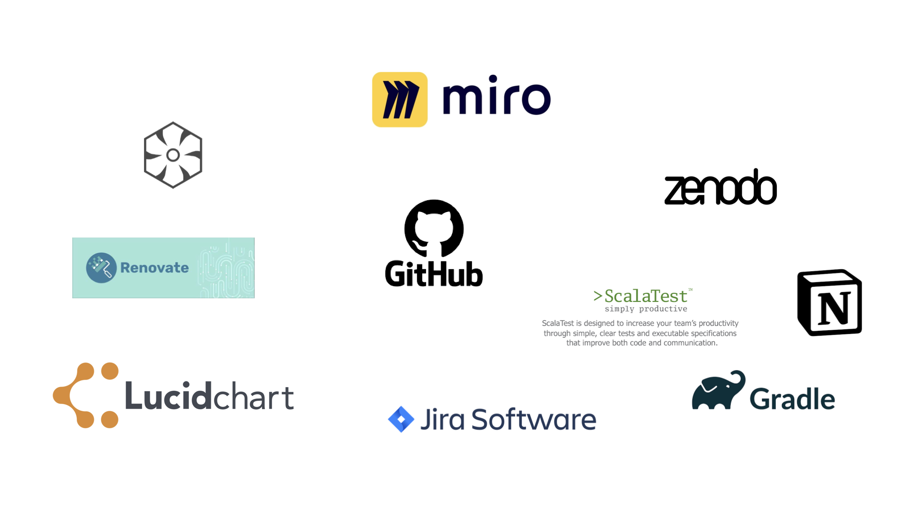
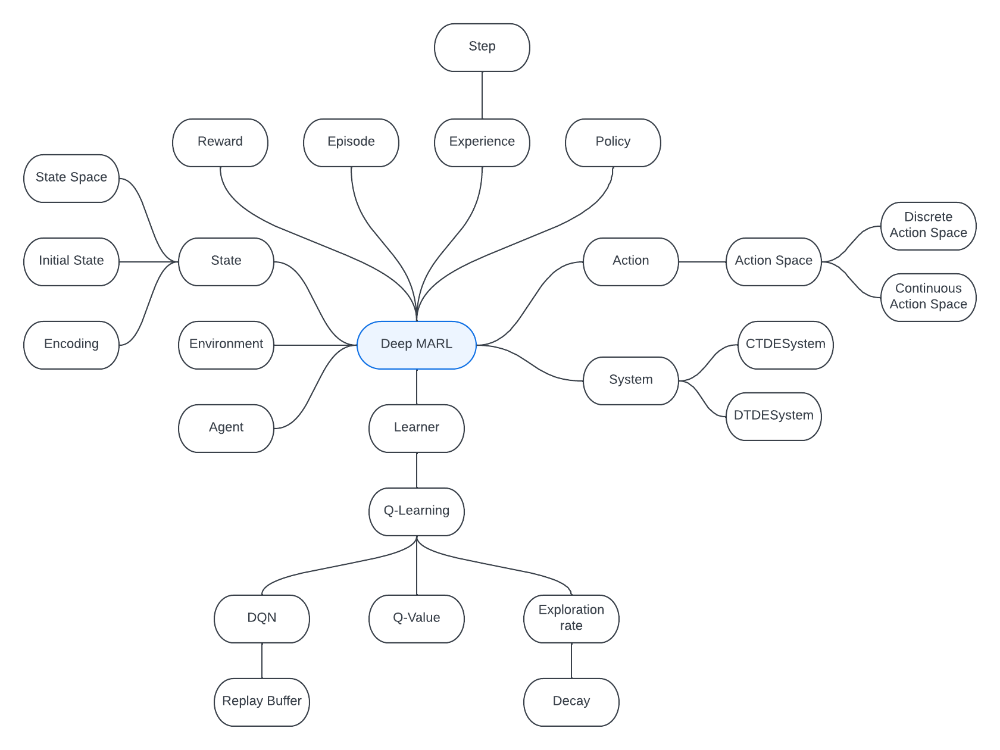

ScaRLib
A Framework for Cooperative Many Agent Deep Reinforcement Learning in Scala
Davide Domini, Filippo Cavallari
Laboratory of Software Systems @ University of Bologna
Introduction
- The project aims to develop a framework for Cooperative Multi-Agent Deep Reinforcement Learning in Scala
- Collective systems might be engineered using the Aggregate Computing paradigm (e.g., using ScaFi)
- Develop a system able to solve complex tasks might be challenging
- Reinforcement Learning techniques enables agents to learn directly from experience
- Deep learning enables policy approximation with a neural network to efficiently solve tasks with a large number of states
Tools
Domain Analysis: Knowledge Crunching
- First of all, the
customer's requestwas analyzed- We tried to understand in detail which parts of the system were already present
- We identified the critical issues in the existing system
- We pinpointed the areas where usability was challenging
- We determined the functionalities that needed to be developed from scratch
- A preliminary
impact mapwas developed Interviewswere conducted with domain experts to define the application requirements- Then,
activity diagramswere created - An initial
ubiquitous languagewas created, which was further refined throughout the project - Finally, a
core domain chartwas developed
Domain Analysis: Ubiquotous Language
Domain Analysis: Core Domain Chart

Design
ScaRLib is composed of three main modules:
scarlib-core: contains the core functionalities of the frameworkdsl-core: contains the DSL for defining experimentsalchemist-scafi: contains the integration with the Alchemist simulator and ScaFi
DevOps: Repository Management
- To track the development of our project we created a GitHub organization called
ScaRLib-group - The main repository that contains the code is called
ScaRLib - To manage the repository GitFlow was used
- The branch
Maincontains project releases - The branch
Developwas used for ongoing development - For each feature a branch
feature/feature-namewas used
- The branch
- Commits were written following the Conventional Commit approach
- The organization contains also some secondary repositories that are useful for speeding up the use of the tool
DevOps: Build Automation
- To manage the project structure we used
Gradle. - The project was organized into three sub-projects:
scarlib-coredsl-corealchemist-scafi
- Thanks to Gradle, we were able to easily manage dependencies between the sub-projects and third-party libraries.
- We also utilized Gradle for customized tasks (e.g., jars generation).
DevOps: Continuous Integration
To automate the CI process, GitHub Actions were utilized. The workflow has been divided into the following steps:
Test: runs (on many operating systems) available tests for the ScaRLib project.Release: if tests were successful, the semantic-release tool is executed, which will automatically create a new release of the software if needed.Success: checks if all previous jobs were successful, it is used for branch protection.
DevOps: Versioning and Releasing
-
To distinguish different versions of the software, the guidelines proposed by Semantic Versioning have been followed.
-
The correct version to be associated with the software state is based on the saved commits, which were written following the Conventional Commit approach. For example:
- MAJOR release: Any commit type and scope terminating with
!causes aBREAKING CHANGE - MINOR release: Commit type
feat(Features) with any scope - PATCH release: Commit type
fix(Bug Fixes) with any scope - NO release: Commit type
ci(Build and continuous integration)
- MAJOR release: Any commit type and scope terminating with
-
ScaRLib is currently released on the Maven Central platform, making it easy and quick to find dependencies to import ScaRLib into new projects.
License
ScaRLib is distributed under the terms of the GNU General Public License (GPL-3.0).
| Permissions | Limitations | Conditions |
|---|---|---|
| ✅ Commercial use | ❌ Liability | ℹ License and copyright notice |
| ✅ Modification | ❌ Warranty | ℹ State changes |
| ✅ Distribution | ℹ Disclose source | |
| ✅ Patent use | ℹ Same license | |
| ✅ Private use | ||
A full copy of the GNU General Public License can be found here.
Future Work
Possible additional features that can be implemented in the future, in addition to those already present, thanks to the modularity of the system, may include the following: